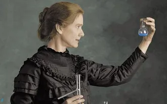

Nome: Marrie Currie
Nome da Mãe: Bronislava
Nome do Pai: Władysław Skłodowski
Sexo:Feminino
Data De Nascimento: 7 de Novembro de 1867
Irmãos: Zofia, Jósef, Bronisława, Helena
Cidade: Varsóvia
Frase favorita: "Na vida, não existe nada a temer, mas a entender"
Marrie Currie
Marie Curie, cujo nome de solteira era Maria Sklodowska, nasceu em Varsóvia, Polônia em 1867. Filha de um professor de física, logo se mostrou uma estudante especialmente dotada. Em 1891 partiu para estudar na Sorbonne em Paris. Com o mais alto louvor, recebeu o diploma em ciências físicas em 1893 e em matemática em 1894. Nesse mesmo ano, encontra-se com Pierre Curie, um notável físico e químico francês que vinha desenvolvendo importante trabalho em magnetismo. Marie e Pierre casaram-se em 1895, dando início a uma parceria científica que iria alcançar renome mundial.
Em busca de um tema para a sua tese de doutorado, Marie Curie começou a estudar o elemento urânio que estava no centro da descoberta de Becquerel sobre a radioativdade em 1896. O termo radioatividade, que descreve o fenômeno da radiação causada pela decomposição atômica, foi de fato cunhado por Marie Curie. No laboratório de seu marido estudou o mineral pechblenda, do qual o urânio é elemento primário e relatou a provável existência de um ou mais outros elementos radioativos nesse mineral. Pierre e Marie Curie investigaram-nos a todos e em 1898 descobriram dois novos elementos, um que Pierre quis que se denominasse polônio em homenagem à terra natal de sua esposa, e o rádio.
Pierre Curie foi indicado para a cátedra de física na Sorbonne em 1904 e Marie continuou em seus esforços para isolar rádio puro e não cloreto. Em 19 de abril de 1906, Pierre Curie morreu em 19 de abril de 1906, ao sair de um almoço na Associação de Professores da Faculdade de Ciências, quando atravessava distraído a Rue Dauphine em Paris durante forte chuva. A sua cabeça foi esmagada pela roda de uma carruagem. Embora arrasada, Marie Curie jurou em carta ao marido morto continuar trabalhando. Em maio de 1906 foi indicada para substituir seu esposo na cátedra de física, tornando-se a primeira professora mulher da Universidade de Sorbonne. Em 1910, auxiliada por Debierne, é bem-sucedida em isolar o rádio metálico puro. Por esta conquista recebeu sozinha o Prêmio Nobel de Química de 1911, sendo a primeira pessoa a receber um segundo Nobel e a única em duas disciplinas.
Interessou-se pela aplicação médica de substâncias radioativas, trabalhando em radiologia durante a Primeira Guerra Mundial e no potencial do rádio na terapia do câncer. Sob direção de Marie Curie, o Instituto Rádio da Universidade de Paris começou a funcionar em 1918 e desde o princípio firmou-se como o maior centro de física nuclear e de química.
A filha de Curie, Irene Curie, foi também renomada cientista e, com seu marido, Frederic Joliot, que em homenagem à mãe de sua mulher, incorporou Curie ao seu sobrenome, foi galardoada em 1935 com o Prêmio Nobel de Química pela descoberta da radioatividade artificial.
Marie Curie morreu em 1934 de leucemia provocada por quatro décadas de exposição a substâncias radioativas.